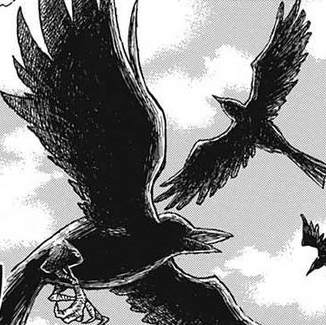

鎹鴉（かすがいがらす Kasugai Karasu）
配音 : 山崎巧（天王寺松衛門）、石見舞菜香（五加木/啾太郎）、高木涉、檜山修之、千葉進步（日本）；江志倫、錢欣郁、賈文安、于正昇（台灣）；翁兆德（Viu）、（TVB）（香港）
用於與鬼殺隊總部聯繫的烏鴉，但善逸的啾太郎（麻雀）是例外。各隊員都附有一隻，擁有極高智商，會用人語複述傳令（除了啾太郎），擁有自我意識，能夠對話。雖然從外表上看是無法區分的，但是各自的性格不同。